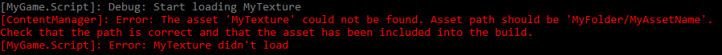
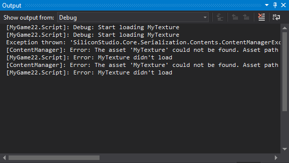

ロギング
中級 プログラマー
Log クラスを使うと、ゲームの実行中に、ゲームに関する情報をログに記録することができます。
自動的に情報を取得するプロファイリングとは異なり、独自のログメッセージを作成し、それをいつトリガーするかを決めるのはあなた自身です。例えば、キャラクターが特定のアクションを行ったときにトリガーされるログメッセージを作成することができます。これは、ゲームのパフォーマンスを調査するのに役立ちます。
Note
リリースモードでゲームをビルドすると、ログの記録が無効になります。
ロギングを使用し、デバッグモードでゲームを実行すると、Stride は、ロギング情報を表示する 2 つ目のウィンドウでコンソールを開きます。メッセージは、レベルごとに色分けされます。 モジュールの名前（ログメッセージを含むスクリプトなど）が、かっこ内に表示されます。続いてログレベル（Warning, Error など）、そしてログメッセージが表示されます。

コンソールには、自分のスクリプトだけでなく、すべてのモジュールからのログメッセージが表示されます。例えば、ContentManager からのメッセージも表示されます。
Visual Studio からゲームを実行した場合、ログメッセージは、代わりに Visual Studio の出力ウィンドウに表示されます。

ログレベル
ログメッセージには 6 つのレベルがあり、重大度に応じて使い分けられます。
| ログレベル | 色 | 説明 |
|---|---|---|
| Debug | 灰 | 高度なデバッグを目的としたステップバイステップの情報 |
| Verbose | 白 | 詳細情報 |
| Info | 緑 | 一般的な情報 |
| Warning | 黄 | 問題を引き起こすかもしれないマイナーなエラー |
| Error | 赤 | エラー |
| Fatal | 赤 | ゲームをクラッシュさせる深刻なエラー |
既定では、ログは Info レベル以上のメッセージを表示します。つまり、既定では Debug, Verbose のメッセージは表示されません。これを変更するには、後述する 最小レベルの設定 を参照してください。
ログメッセージを出力する
ログを出力したいコードが含まれるスクリプトで、次のように記述します。
Log.Debug("My log message");
Debug の部分を、ログメッセージに使用するレベルで置き換えることができます（先述の ログレベル を参照）。
これを if 文と組み合わせることで、特定の条件を満たしたときにメッセージをログに残すことができます（後述する サンプルスクリプト を参照）。
ログレベルを設定する
ログに出力する最小のレベルを設定することができます。例えば、Warning 以上の厳しいメッセージだけを表示したい場合は、次のようにします。
Log.ActivateLog(LogMessageType.Warning);
Note
これはグローバルな設定ではありません。設定したログレベルは、設定したスクリプトでのみ適用されます。
実行時にログレベルを変更する
((Game)Game).ConsoleLogLevel = LogMessageType.myLogLevel;
特定のログを無効にする
GlobalLogger.GetLogger("RouterClient").ActivateLog(LogMessageType.Debug, LogMessageType.Fatal, false);
// RouterClient モジュールのロギングを無効化
// Disables logging of the RouterClient module
コンソールでのロギングを無効化する
((Game)Game).ConsoleLogMode = ConsoleLogMode.None;
ログファイルを作成する
ログ出力をテキストファイルに保存するには、Start メソッドに以下のコードを追加します。
var fileWriter = new TextWriterLogListener(new FileStream("myLogFile.txt", FileMode.Create));
GlobalLogger.GlobalMessageLogged += fileWriter;
これにより、プロジェクトの Debug フォルダにファイルが作成されます。（例：MyGame\MyGame\Bin\Windows\Debug\myLogFile.txt）
サンプルスクリプト
次のスクリプトは、MyTexture テクスチャーが読み込まれたかどうかを確認する例です。
テクスチャーが読み込まれたとき、ログはデバッグメッセージ（Log.Error）を表示します。
読み込まれなかったときは、ログはエラーメッセージ（Log.Debug）を記録します。
using System.Linq;
using System.Text;
using System.Threading.Tasks;
using Stride.Core.Diagnostics;
using Stride.Core.Mathematics;
using Stride.Input;
using Stride.Engine;
using Stride.Graphics;
namespace MyGame
{
public class Script : SyncScript
{
public Texture myTexture;
public override void Start()
{
// Initialization of the script.
Log.ActivateLog(LogMessageType.Debug);
Log.Debug("Start loading MyTexture");
myTexture = Content.Load<Texture>("MyTexture");
if (myTexture == null)
{
Log.Error("MyTexture not loaded");
}
else
{
Log.Debug("MyTexture loaded successfully");
}
}
}
}